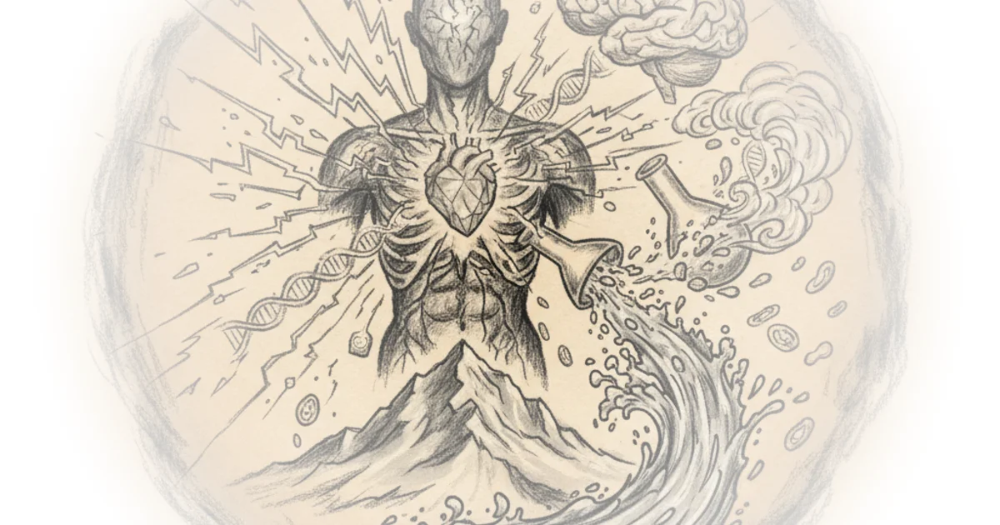
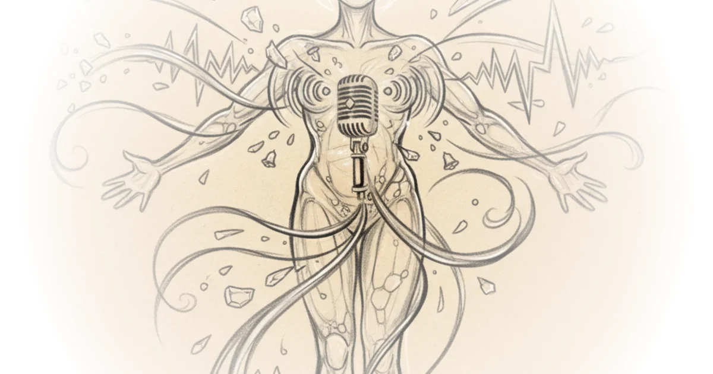
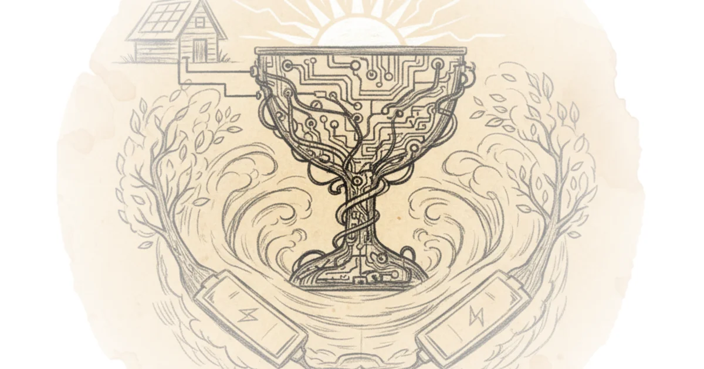
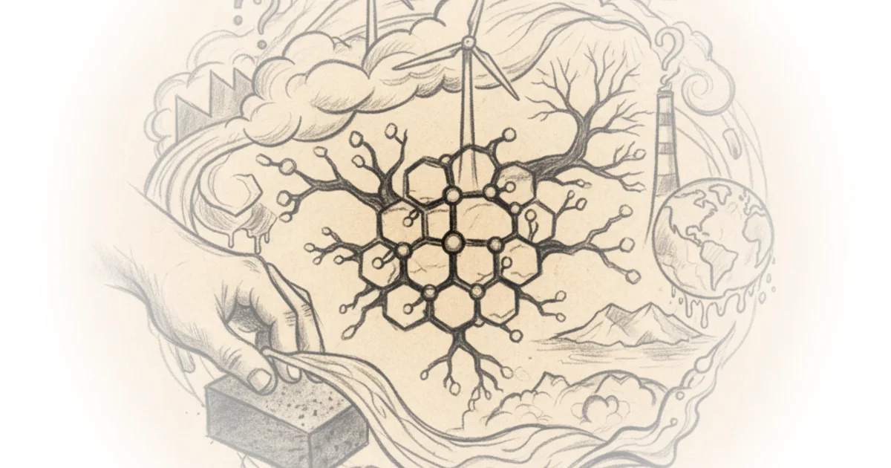
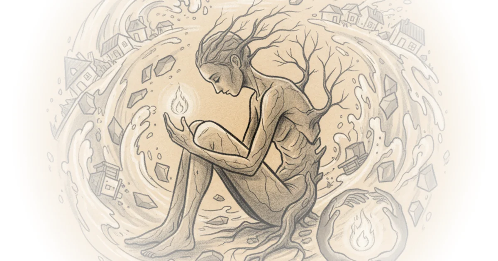
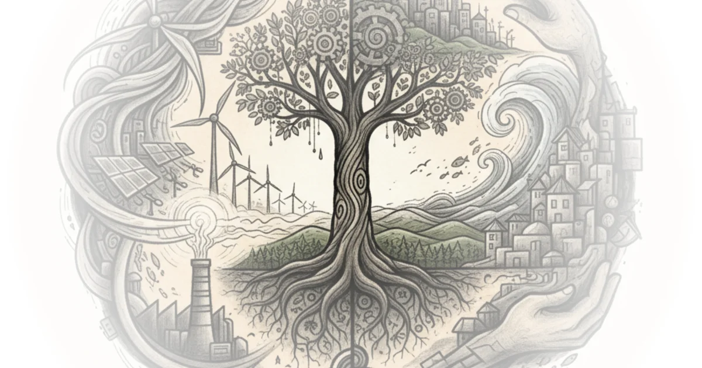
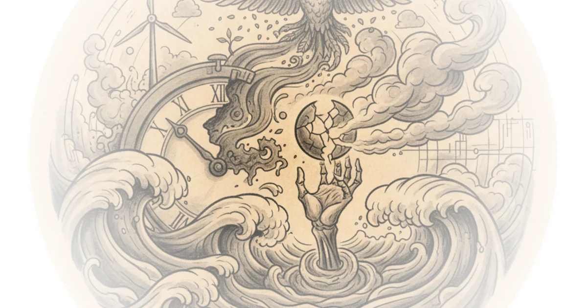
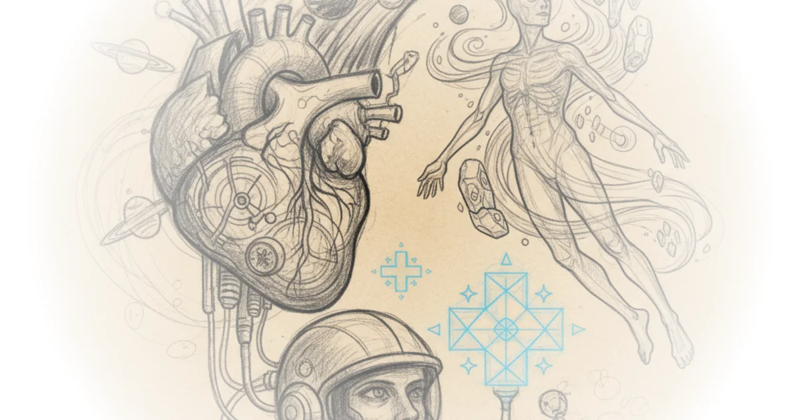

Doctor Dissects the Wim Hof Method - Cold Hard Science Analysis Rohin Francis · Medlife Crisis ·Jun 27, 2019 · 38 min read · Public Health 
I Waterproofed Myself With Aerogel! Derek Muller · Veritasium ·Jun 21, 2019 · 10 min read 
Tesla batteries : Are they the Holy Grail of Climate Change? Dave Borlace · Just Have a Think ·May 26, 2019 · 11 min read 
Why Are 96,000,000 Black Balls on This Reservoir? Derek Muller · Veritasium ·May 10, 2019 · 12 min read
Bringing The Dead Back In Real Life - The Unbelievable Power Of Hypothermia Rohin Francis · Medlife Crisis ·Apr 12, 2019 · 11 min read · Public Health
Climate Change and The Great Ocean Conveyor Dave Borlace · Just Have a Think ·Mar 31, 2019 · 12 min read
Can Transfusing Young Blood Reverse Ageing? Rohin Francis · Medlife Crisis ·Mar 7, 2019 · 11 min read · Public Health
Graphene and Climate Change. Really? Dave Borlace · Just Have a Think ·Feb 10, 2019 · 11 min read 
Bio-Energy with Carbon Capture and Storage Dave Borlace · Just Have a Think ·Jan 27, 2019 · 11 min read
Why do so many living things get the same number of heartbeats? Rohin Francis · Medlife Crisis ·Dec 12, 2018 · 10 min read · Public Health
Ipcc Climate Change : Protecting the vulnerable Dave Borlace · Just Have a Think ·Nov 18, 2018 · 11 min read 
Ipcc Climate Change : CO2 Removal and Solar Radiation Modification Dave Borlace · Just Have a Think ·Nov 11, 2018 · 14 min read
Ipcc Climate Change Transitions : Eco Cities & Industry Dave Borlace · Just Have a Think ·Nov 4, 2018 · 12 min read · Housing & Cities
Ipcc Climate Change Transitions : Energy, Land and Coast Dave Borlace · Just Have a Think ·Oct 28, 2018 · 15 min read 
Ipcc Climate Change : Countdown to Katowice Dave Borlace · Just Have a Think ·Oct 21, 2018 · 13 min read 
Hydrogen Fuel Cells - are they our future? Dave Borlace · Just Have a Think ·Sep 29, 2018 · 11 min read
Ocean Acidification : What's the threat? Dave Borlace · Just Have a Think ·Aug 27, 2018 · 10 min read
Space Doctor Analyses Medicine In THE Expanse Rohin Francis · Medlife Crisis ·Jul 25, 2018 · 10 min read · Public Health 
Thyristors Did to Power What Transistors Did to Logic Asianometry · Asianometry · 17 min read · AI & Tech